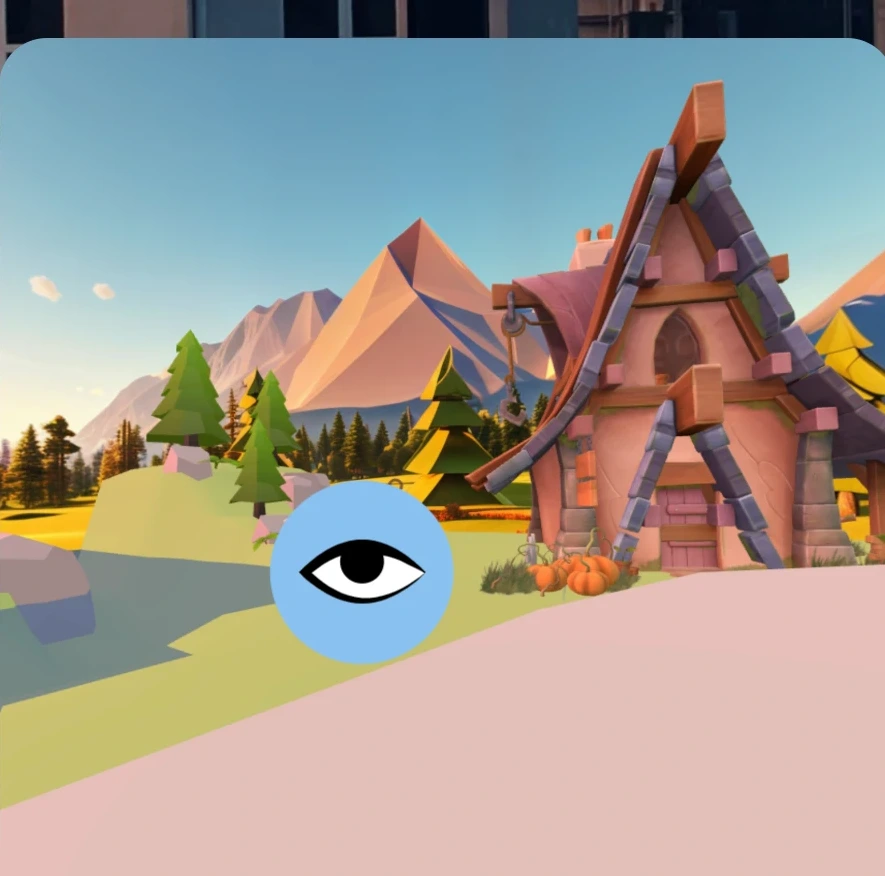
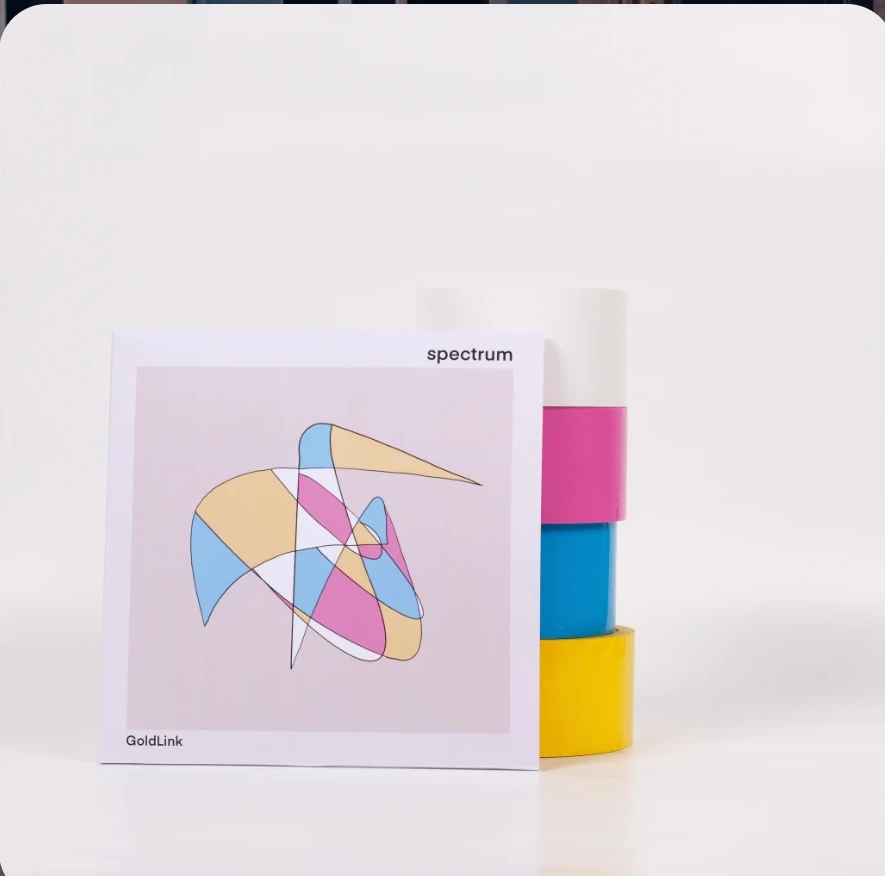
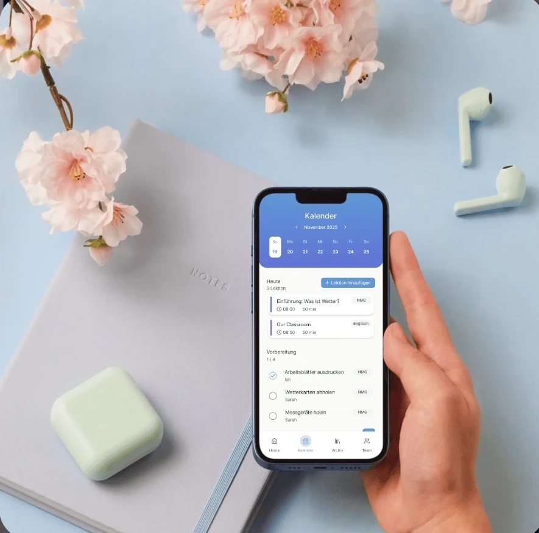
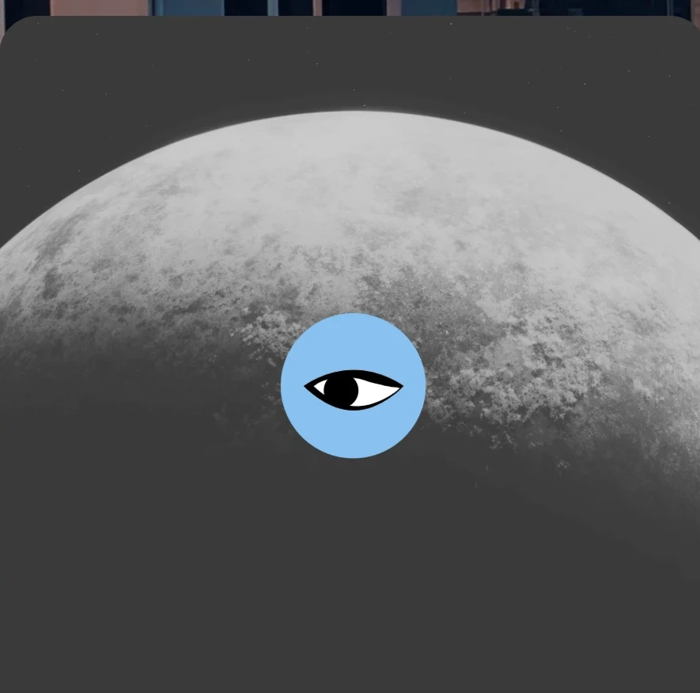

SchatzkisteVR
Erinnerungen erleben.
Verbindungen schaffen.
Independent designer & creative developer
Digital Design · UI/UX · Frontend Development
Unter der Oberfläche01 / Ein bisschen tiefer
Webdesignerin und
Frontend Entwicklerin
aus St. Gallen.
Ich gestalte digitale Erlebnisse an der Schnittstelle von Technologie und Empathie.
Mehr über mich02 / Selected work · 2021—2026
Persönliche Perspektiven.
Digitale Möglichkeiten.

Erinnerungen erleben.
Verbindungen schaffen.

Wenn Buchstaben
Raum einnehmen.

Weniger Planung.
Mehr Möglichkeiten.

Neugierig bleiben.
Neues ausprobieren.